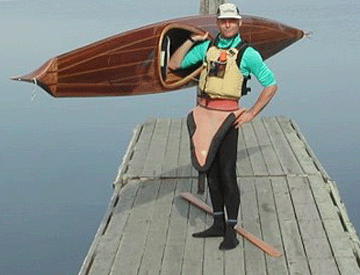

Laughing Loon, Shooting Star baidarka review by Ken Katz
Ken Katz in the Shooting Star baidarka
I have been able to paddle my SS in some different conditions and am very pleased with the boat!
My first few paddles were in pretty flat water and I found the SS to be very predictable in it's handling with no tendency to weathercock. The bow does kick up a bit of water about 2 feet aft of the bow where it becomes pretty full. I seems to be reasonably fast, but maybe not as fast as my Outer Island.
I have since had a chance to paddle in a fair bit of wind and some waves which is what I built the boat to paddle in. This morning I went out with the wind blowing 20+ and 2-3 foot waves. Paddling into the waves, the SS seemed to pitch less than my other boats and was drier than I expected. The bow would plunge into the wave and rise up quickly shedding water nicely. The recessed leading edge of the cockpit does seem to prevent water from splashing you in the face. I found paddling perpendicular to the waves very easy. The boat is solid as a rock and course corrections are easy with a sweep of the paddle. I expected that with the large amount of rocker in the bow and the fairly flat midship sections, downwind rides would be squirrelly. I was proven wrong!

The SS tracks really well when surfing down the face of a wave. All kayaks will broach, but the SS can be straightened out easily with a paddle sweep. I dropped the aft edge of the cockpit which makes laying back on the deck easy when surfing and rolling. When I would be surfing down a wave, the fixed rudder seemed to really do it's job, especially with me laying back on the aft deck. I find this boat very easy to roll and balance brace.
I didn't think it was possible to have a kayak track this well and be able to turn this easily.
Yesterday I paddled with 2 friends that have longer SOF Baidarkas. They are both very fast paddlers and I was concerned that I would find the SS not fast enough to keep up with them. Again, I was wrong. This kayak is faster than I originally thought and our "I'm not racing" races found me doing just fine. My feeling is that the large rocker in the bow and the very full sections forward don't help speed in flat water, but when there is any texture to the water it seems to be an asset. Compared to one of my friends Dyson 5.28 meter Baidarka, the SS is much fuller in the bow, has more rocker in the bow and throws more water in flat water. Overall, however, the SS holds it's own and does not need a rudder as the Dyson boat does. I wonder what this boat would be like with the bow less full and a touch less rocker?
As it sits it is an excellent boat!! It not only looks fast and sleek, it shines.
Thanks again Rob for an awesome boat!!
Ken Katz, Oakland CA
August 26, 2007
I spoke with Ken today to ask if I might use this review which he sent me a few years ago. He kindly approved.
Ken and his wife have moved and now live in British Columbia, Canada.
Ken says his wife paddles the Shooting Star often.
Ken continues to race kayaks.
Rob